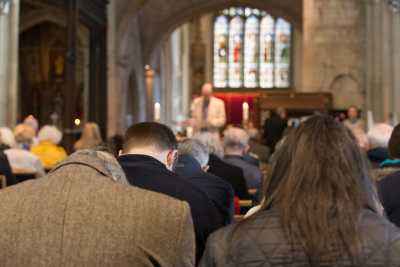
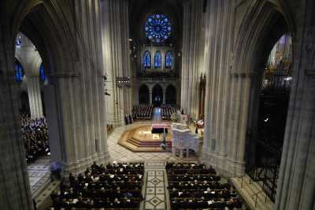
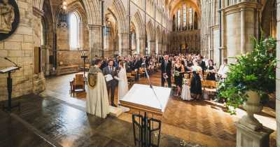

Функции на катедралите
Функцията на катедралата е главно да служи на Бог в общността, чрез нейното йерархично и организационно положение в църковната структура. Самата сграда с физическото си присъствие символизира както славата на Бог, така и на църквата.

Молитва
Катедралата, нейният епископ и високопоставени лица имат традиционни функции, които са предимно религиозни по природа, но могат също да бъдат тясно свързани с гражданския и обществен живот на града и региона.

Погребение

Свадба